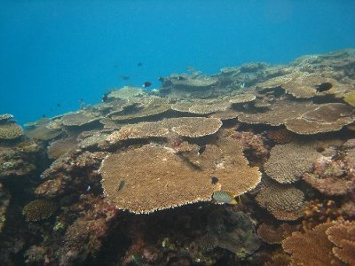
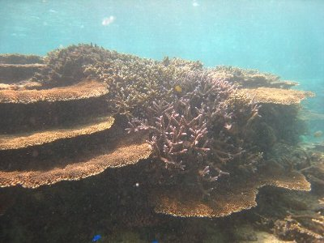
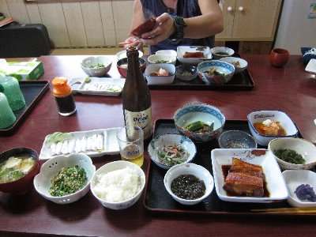
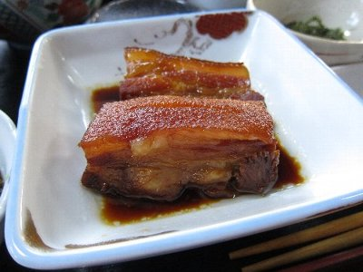
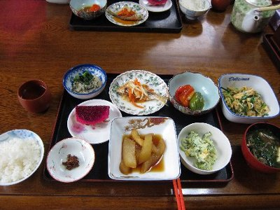

2011年沖縄（宮古島） | 2011年9月 |
|---|---|
| 今年も行ってきました沖縄！ 夏休みを沖縄で過ごす。色々な離島に行きました。今年はそんな中で昨年訪れた宮古島に再訪です。同じ地を踏みしめるのは、これが初めてですね。 毎年9月に行っていますが、9月は台風シーズンです。これまでは、なんとか当らずにすみましたが、今年はモロに沖縄本島直撃コース！ 中止を覚悟していたのですが（実際、中止なら山陰地方にでも行こうと考えていた）、前日に台風がＵターンしたため飛行機が飛び、無事に本島経由の宮古島に行くことが出来ました。あ〜、良かった♪ | |
 ゲストハウス風家さんの夕食風景 |  伊良部島・渡口の浜 海綺麗でしょう！ |
| 最初の宿は昨年も泊まった「ゲストハウスひだまり」です。管理人さん、私のことを覚えていてくれました。1泊しただけなのにね。この日は、宿に泊まっている有志で居酒屋にくり出しました。 翌日は、伊良部島に渡ろうと思ったのですが、強風高波で船が欠航のため断念。急遽本日の宿を探す羽目になり、一番近い風家さんに連絡しました。ここはゲストハウスで1泊980円の部屋が有るのですが、さすがにその部屋は満室で、一番高い4000円の部屋になってしまいましたが、個室でシャワー完備・当日予約となれば上等でしょう。 風家さんも、暖かい感じで良い宿です。犬がいますので犬嫌いの人は駄目ですね。 基本、素泊まりですが、500円で夕食が食べられ、朝食はパンなどがサービスであります。これ、侮れません！ 夕食は、その日によって違うのですが、私の時は魚の煮つけ（高級魚らしい）と、チャンプルー等など、大皿に盛られてみんなで食べます。お腹一杯になります。みんなで家族のようにテーブル囲んで食べるので楽しいです。 朝食は、カウンターにパンと総菜が置いてあり、自由に食べられます。コーヒーも有ります。これで980円だったら凄すぎです！ 次回、チャンスが有れば、またここに泊まろう。 | |
 渡口の浜でテント泊 |  伊良部でのダイビング・サンゴホール |
| 三日目、やっと伊良部島に渡ってシュノーケルを楽しみ、この日は渡口の浜でテント泊。去年の佐和田の浜にテント泊しようとしたのですが、北からの風が強いため、今日は南向きの渡口の浜にした方が良いんじゃない？とレンタルバイク屋さんのアドバイスに基づいたものです。渡口の浜、青い綺麗な浜です。ちょっとテント張る場所に困りましたが、ここもトイレ・水シャワー完備なので快適です。難点は、夜やっている食堂が近くになく、バイクで走らなければならないとこでしょうか。 星を見ようと思っていたのですが、夕方から曇ってきてしまい、星は断念。 四日目、昨年もお世話になった伊良部島マリンズブロ宮古さんでダイビング。 今年は、「サンゴホール」と「中の島チャネル」と「ロックビューティー」ポイントへ。 サンゴホールは、水深32mと、かなり深い！ って初心者の私が突然行くポイントじゃないんじゃない？(笑) いつも1本目の耳抜きが苦労するとこへ、いきなり深さ32mへ。耳抜ききつかった〜 ま、無事に洞窟探検の様なポイントをクリアー♪ 一回潜っちゃえば平気なので。中性浮力に苦労しつつ、年に一度の沖縄ダイビング楽しめました。 | |
 |  |
| 五日目は池間島近辺のシュノーケル。八重干瀬マリンサービスというショップのお世話になりました。一日8500円のツアー代金だけど、送迎あり＋昼食付なので、一人だとレンタカーやらモロモロ考えると、高くないと思うんですよね。トップシーズンのレンタカーは、やっぱり高いです。 ここに限らず、島ではアクティビティに送迎が結構ついてますので、それを利用するとレンタカーやバス代が掛らず、以外にお得です。特に一人旅ならね。人数いればレンタカーがお得だとは思いますが。 このツアーは八重干瀬（ヤビジ）に行くツアーなのですが、北からの波が強く、モロ北にある八重干瀬は無理との事。ま、仕方ないよね。 それでも、池間島近辺のシュノーケルポイントは、八重干瀬と同じくらいにサンゴがあり綺麗でした。 | |
 池間島近辺のシュノーケル。目の前の島が池間島 |  池間島近辺のシュノーケル。珊瑚すごいっしょっ！ |
| 最後の宿は、言わずと知れた農家民宿津嘉山荘です。やっぱココの料理は食べなきゃね！ 今回はちゃんと夕食も撮影してきましたが、途中で追加されるので写っていないものもあります。ほんと、お腹いっぱいです。また、おばちゃんと宿に泊まっている人たちと、色々な話をして盛り上がりました。 いや〜、沖縄楽しい♪ 宮古島最高！ また、離島の旅に行きたいですね。 | |
|  同じく池間島。これ浜から凄い近いところ（笑 |  津嘉山荘の夕食 |
|  千代ちゃん自慢のラフティー。美味い♪ |  津嘉山荘の朝食。朝から腹一杯♪ |
| 写真＆コメント by べっしー | |